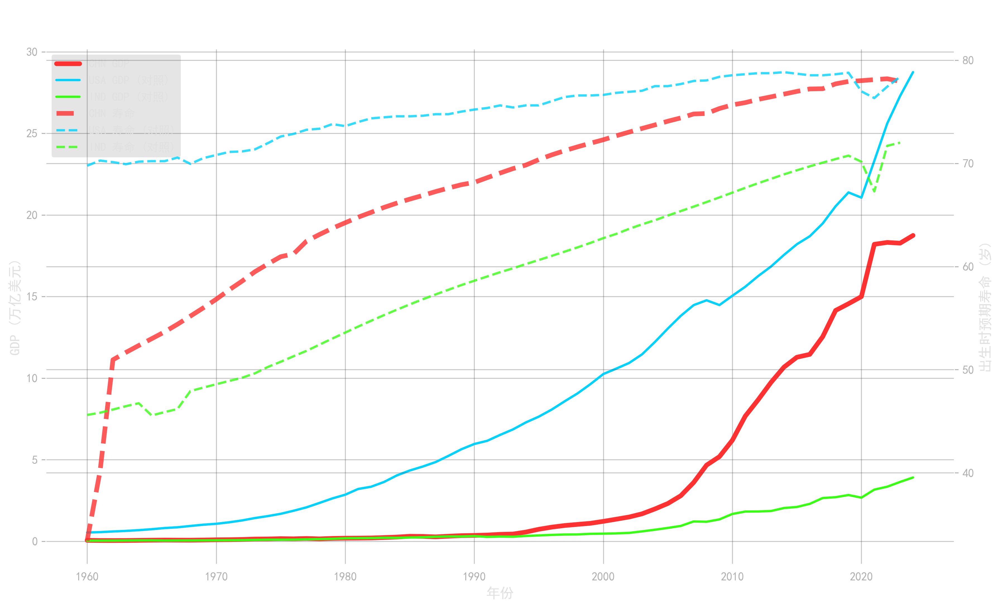

如右侧截面数据所示，我国省级地区生产总值（GDP）均值从 2000 年的 3,198 亿元，狂飙至 2024 年的 4.3 万亿元，实现了指数级跃升，为医疗基建提供了坚实的资金底座。
核心普查年份的国民预期寿命，从 75.7 岁稳步爬升至 78.3 岁，体现了我国医疗资源规模扩张带来的显著民生红利。
观察右侧底座可见，受限于人口普查频次，非普查年份（如 2000、2024年）存在大量寿命数据的时序缺失 (NaN)。这直接凸显了我们下一模块引入 FFILL 向后结转算法 进行缺失值平滑处理的必要性！

| 年份 | 统计口径 | GDP(亿元) | 预期寿命(岁) |
|---|---|---|---|
| 2000 | 31省均值 | 3,198.38 | NaN |
| 2005 | 31省均值 | 6,179.77 | NaN |
| 2010 | 31省均值 | 13,591.92 | 75.78 |
| 2015 | 31省均值 | 22,733.74 | NaN |
| 2020 | 31省均值 | 33,261.34 | 78.18 |
| 2022 | 31省均值 | 39,448.13 | 78.32 |
| 2024 | 31省均值 | 43,148.57 | NaN |
| [ 状态：省级原始面板共计 775 条记录 ] | |||